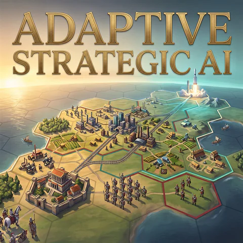

项目详情
Adaptive Strategic AI mod for Civilization VI
维护者项目介绍
Adaptive Strategic AI 是一款面向 Gathering Storm 规则集的 AI 改进模组，目标是让神级难度从开局到胜利阶段都保持竞争性。它以随时代增长的难度曲线替代原版神级难度过度集中的前期压力，并让每个主要 AI 根据自身位置与近期趋势独立调整发展、恢复、扩张、防御、施压和战争计划。模组强化了定居、经济、军事准备、攻城、战时生产和不同胜利路线的执行，同时只向经确认存在广泛或严重落后情况的 AI 提供有限恢复支持。它不会生成单位，也不会直接授予科技、市政、资源、城市或已储存的进度。
项目封面
